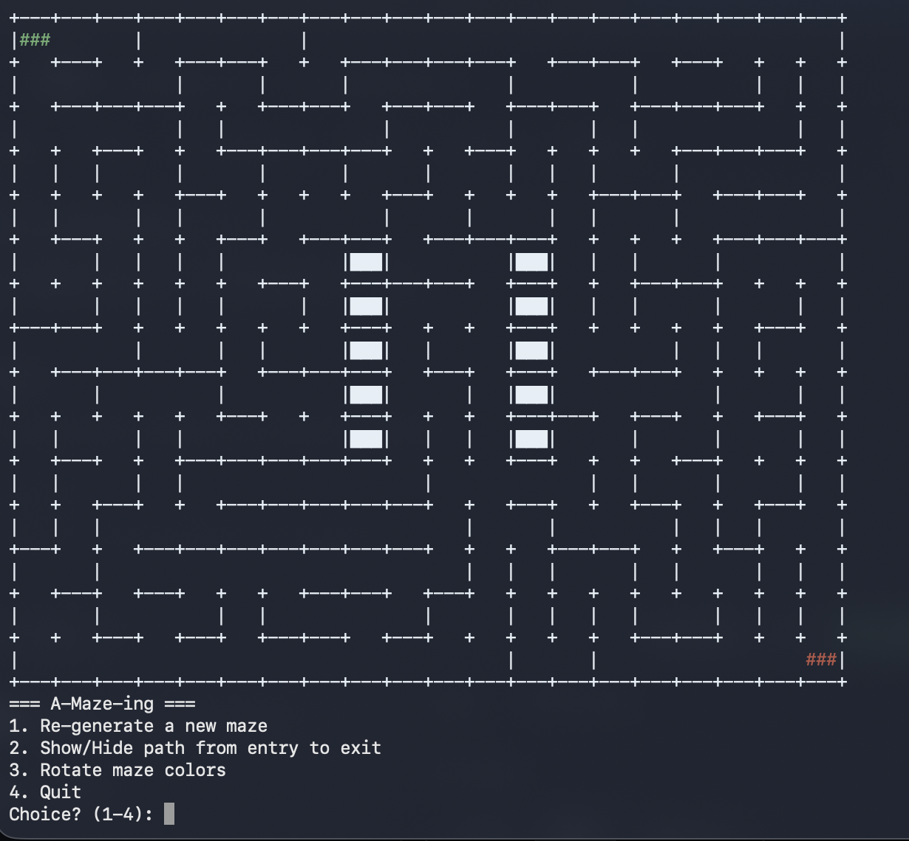

Pac-Man
The famous arcade game, entirely rebuilt in code: ghosts, score, levels, all from scratch.
View projectLooking for a work-study contract (alternance).
I'm Nicolas. I come from the hospitality industry and changed paths to pursue what building things with code. I'm currently a student at 42 Paris in a Python-focused program, working towards becoming a digital technology architect. This site is where I document what I create: open source projects in C and Python, and ideas I think are worth pursuing. I'm drawn to AI, embedded systems, cybersecurity, data and problems that don't have clear answers yet. I believe the best builders are the ones who've lived outside the terminal.
The famous arcade game, entirely rebuilt in code: ghosts, score, levels, all from scratch.
View project
A program that invents mazes on its own, different every time, and draws them on screen.
View project
A 2D Rubik's cube you can manipulate on screen, programmed in C.
View project